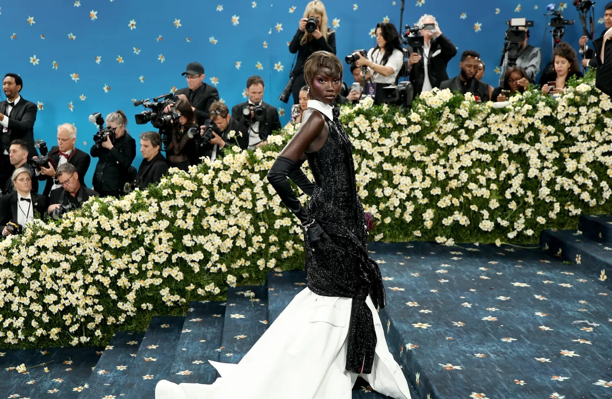
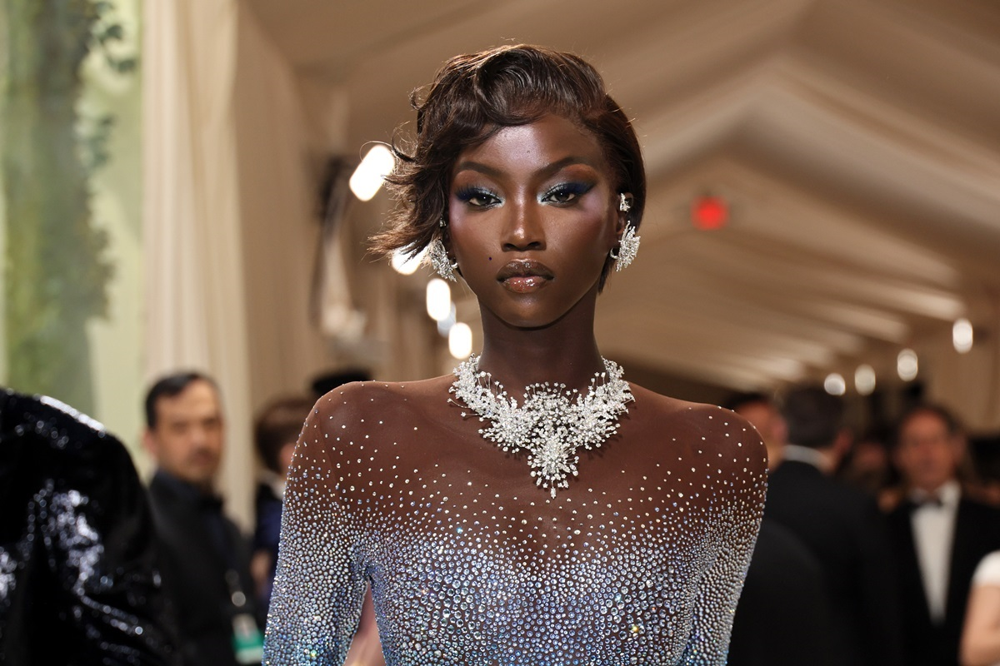
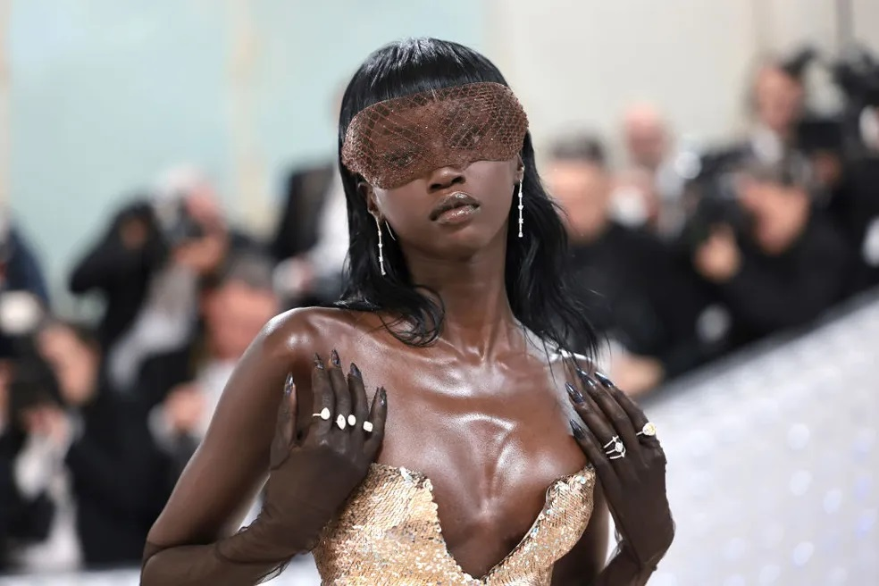
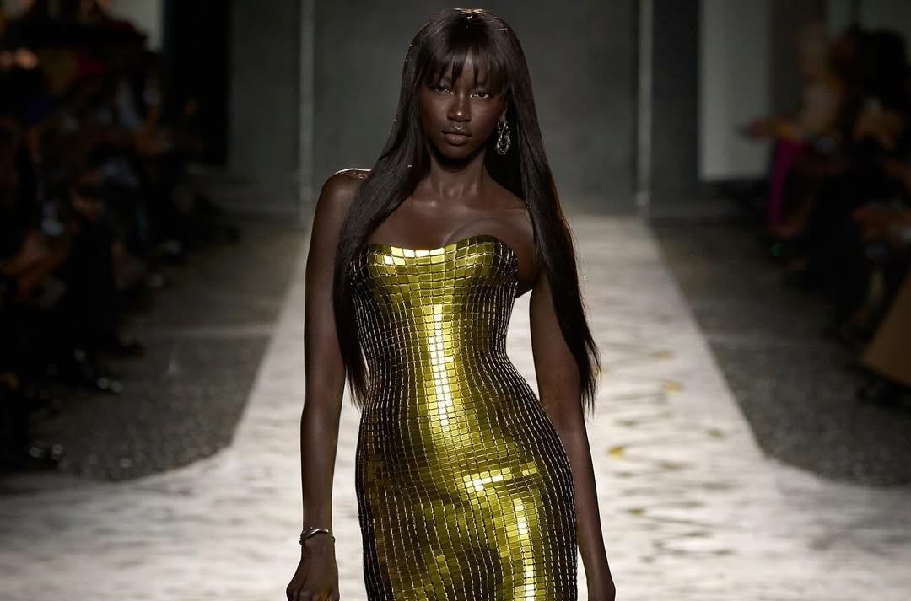
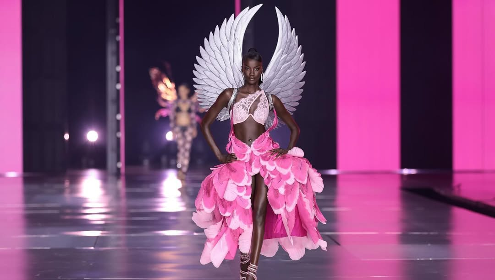
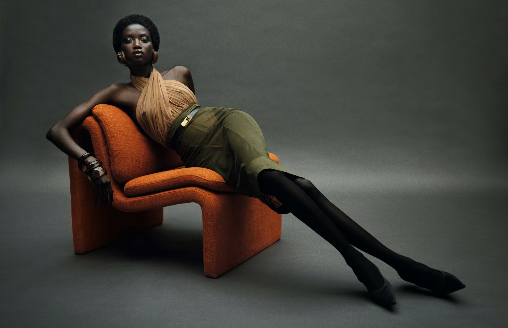

Veja alguns eventos e campanhas publicitárias que Anok Yai participou:
 Anok Yai no Met Gala 2025, criado por Thom Browne.  Anok Yai de Swarovski no Met Gala 2024, que abre a exposição "Sleeping Beauties: Reawakening Fashion".  Anok Yai usando Prabal Gurung para o Met Gala 2023.  Anok Yai desfilando na passarela do Versace Spring Summer 2025.  Anok Yai na passarela da Victoria's Secret Show 2024.  Anok posando para a revista Elle USA, fotografado por Mario Sorrenti e estilizado por Alex White.